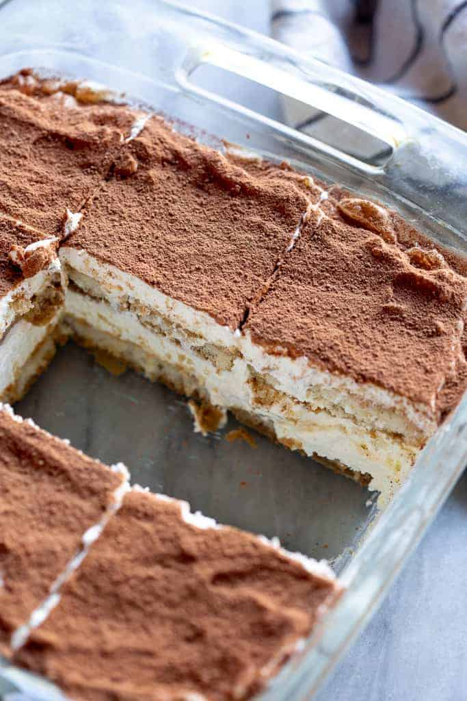

Tiramisu

Who am I?
This delicious and unbelievably easy Tiramisu recipe is made
with coffee soaked lady fingers, sweet and creamy mascarpone
(no raw eggs!), and cocoa powder dusted on top. It requires no
baking and can be made in advance!
Ingredients
- Ladyfingers
- Mascarpone
- Coffee
- Heavy Whipped cream
- Granulated sugar
- Vanilla extract
- Cocoa powder
Steps
- Mix creamy filling. Beat the mascarpone, cream, sugar, and
vanilla together until stiff peaks.
- Dip lady fingers. Add the espresso and liqueur (if using)
to a shallow bowl and dip the lady fingers on both sides
(don’t let them soak–just a quick dip!)
- Layer mascarpone. Smooth a layer of the mascarpone/whipped
cream mixture on top of the lady fingers.
- Repeat. Add another layer of lady fingers (dipped in coffee
and liqueur) and another layer of cheese mixture. Dust with
cocoa powder.